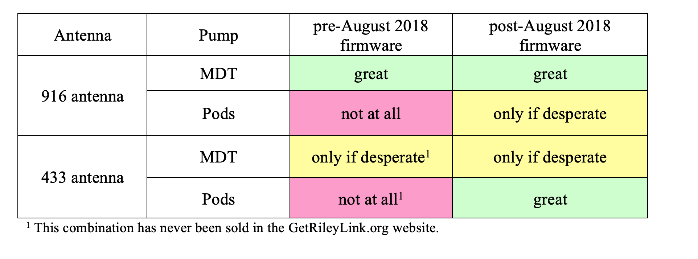

RileyLink FAQs⌁
What are the differences between RileyLinks?⌁
There are two different types of RileyLink (RL) currently; the difference being the antenna is optimized for the pump you are using.

Is the new antenna an "upgrade" in Loop performance?⌁
It is a bit of a misnomer to think of the newer copper coil antenna as an "upgrade". It is only an upgrade if you want to pod Loop. The new antenna will actually decrease your range if you try to use it with a Medtronic Loop. See the next FAQ for more detailed description and chart.
What will happen if you use a 916MHz antenna RL with an Omnipod? Or vice versa?⌁
The answer will first depend on exactly how old that RL is and what firmware it has installed.
Before August 2018, RLs had a firmware that works for only Medtronic pump communication. So, if you have the older firmware on a RL, your pod will never pair in Loop using that RL. The GetRileyLink site does offer a RL firmware update service, if you want to update to the newer pod-usable firmware.
RLs produced after August 2018, include newer firmware that is needed for Omnipod pump communications as well. The newer firmware will say subg_rfspy 2.2/ble_rfspy 2.0 in the RL menu, like below when paired in Loop.

Assuming your has the newer RL firmware, you can technically use that RL with either pump on Loop. But, you will have significant frustrations with the short distances required between the pump/pod and RL when using the "wrong" antenna. Even keeping RL in the pocket on opposite of where pod is on your body can cause issues with the 916MHz antenna. With mismatched antenna/pump, the RL needs to be very close and in clear line-of-sight to pump/pod, that it makes everyday living a bit hard. If you use the appropriate-antenna-for-your-pump RL, the distances the pump/pod and RL can tolerate from each other is much more "real world" friendly and stable.
In summary, definitely use the appropriate RL with the antenna that matches your pump so that you are less frustrated. In a pinch, your old RL might work as a backup, but you won't love it.

Can you swap out the old antenna on a RL?⌁
Yes, the antenna swap is not a hard swap if you just have basic soldering skills. The old antenna can be removed easily by reheating the solder. New 433MHz antennas and a cap can be found on GetRileyLink site. Tips: use flux and clean the antenna stub before soldering. Poorly DIY-soldered antennas can lead to decreased range and frequent communication drops between Loop and the pods.
How long will my RL go between charging?⌁
RileyLink's can go about 30-32 hours (more or less) on a single charge. There is no way to see the remaining charge level, so most people just get into the habit of charing overnight while they sleep. The actual time to fully recharge is about 1 or 2 hours; you'll know it is fully charged when the red light turns off. After a full charge, the red light will turn off and then periodically turn on for short times while it "tops off" while still on charger.
How long will my RL battery last?⌁
Eventually, lipo batteries will lose charging capacity and you would want to replace if you notice the battery not lasting the full day. We've been using our current battery for nearly 2 years without issue.
How can I tell how much charge my RL has?⌁
You can't. There is no charge level indicator. Just charge it nightly, and you won't have a problem. Full battery charge should last about 30-36 hours depending on battery health. Charging takes less than 2 hours.
How should I carry the RL? Does it make a difference?⌁
In general, you want to get in the habit of carrying RL with you, yes. A pocket, carabiner, lanyard, spi-belt...the options are endless. What you don't want to do is put the RL in a blocking bag that has Rf-ID blocking (some travel fanny packs have that). The distance that your RL can be away from your pump will depend heavily on the environment you are in.
Is RL waterproof?⌁
Nope. Nor is it sweat-proof. Be careful.
What is the most common issue for RL?⌁
People not pushing the lipo battery in all the way when they first assemble their RL. It takes quite a bit of push to get the plug in well enough. If not secured well, Loop will have more frequent problems.
Can I use more than one RL at a time? Will it improve anything?⌁
Yes, you can have two turned on, but it won't help anything really. Loop only uses one RL at a time. IF you have several RLs turned on in Loop settings, your Loop will only look for another RL after Loop fails for over 15 minutes on the original RL. In my experience, it is rare that Loop would fail for more than 15 minutes and a second RL would help in the same environment. If one RL gets damaged though and you need to swap out to a second RL, there's no issues with that.
Can I run Loop without a RL?⌁
Nope.